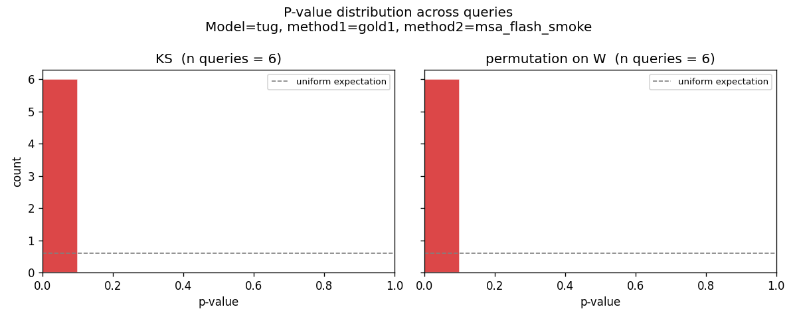
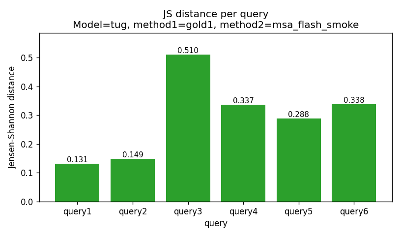
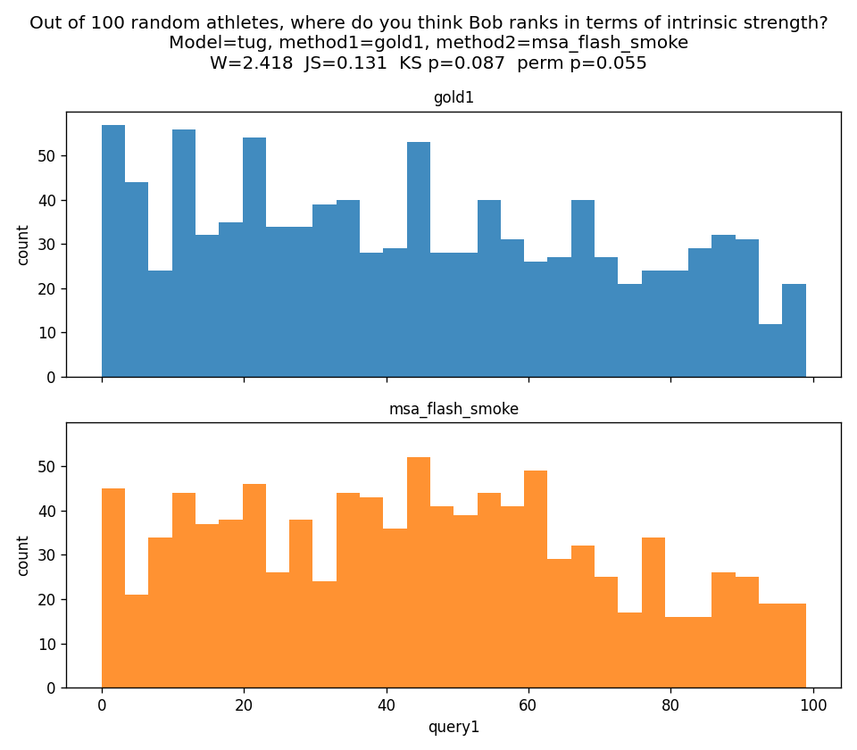
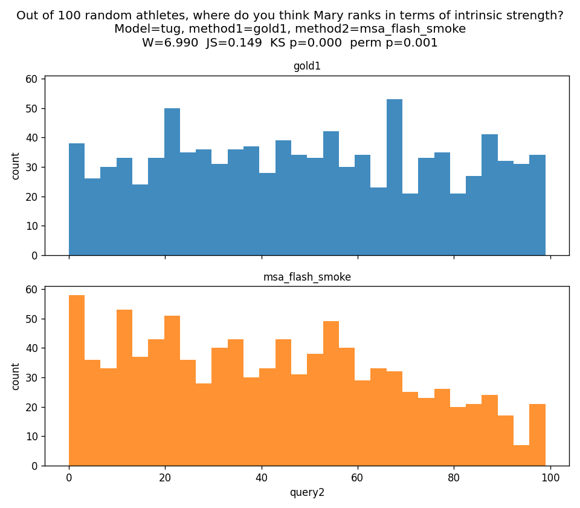
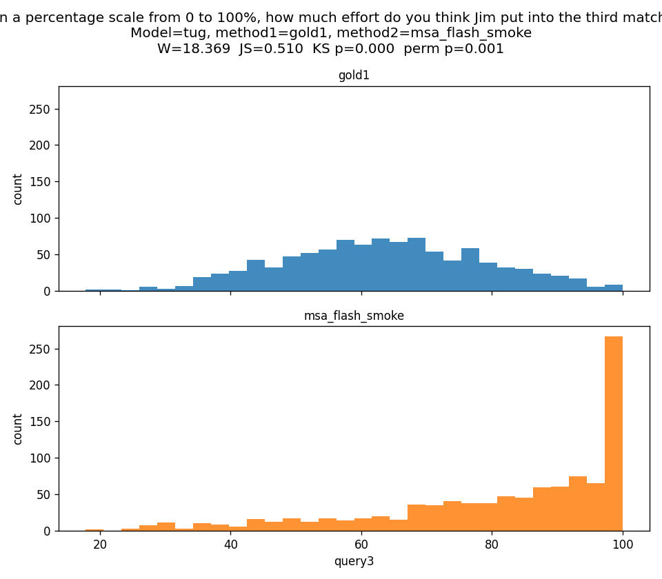
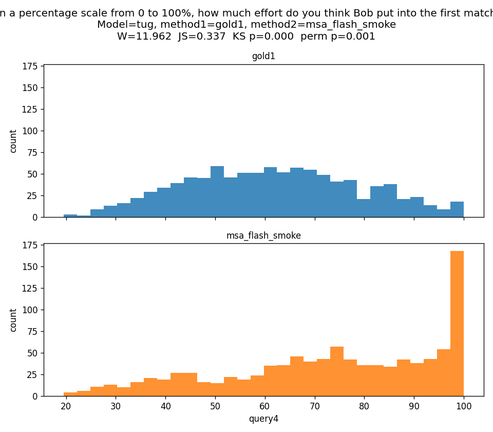
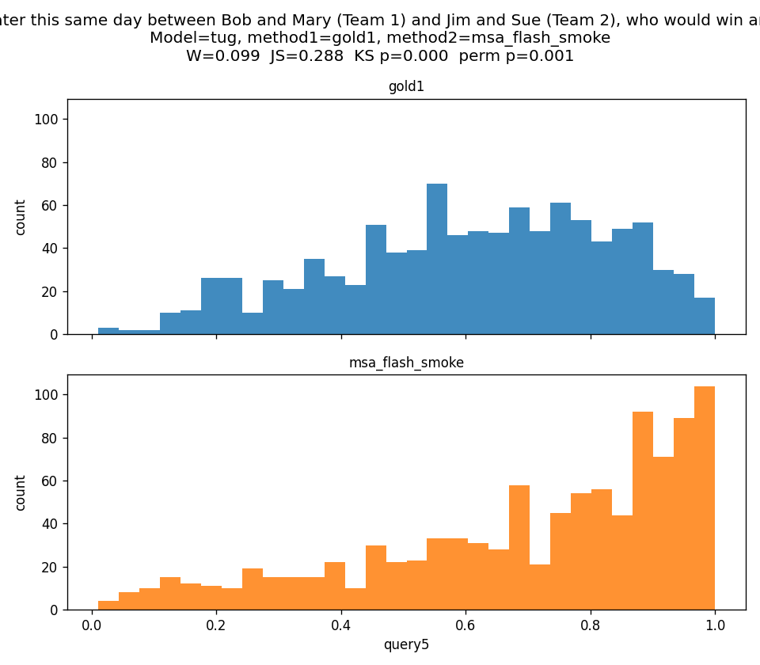
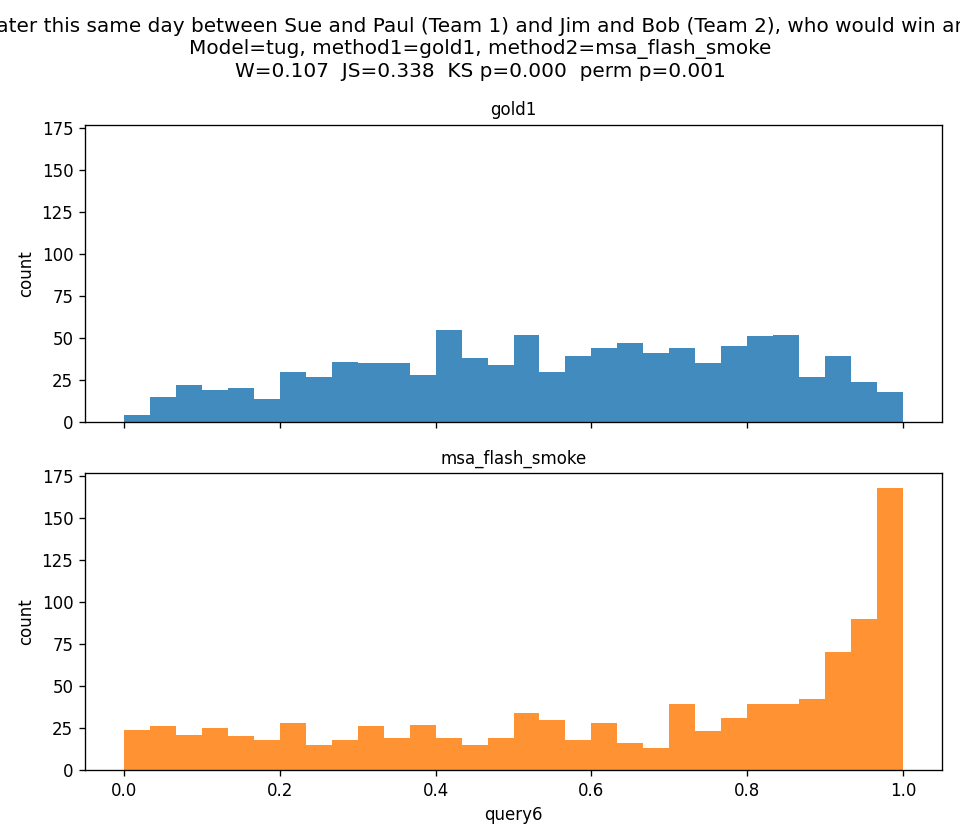

| query | label | W | W/range | W/sd | JS | KS stat | KS p | perm p |
|---|---|---|---|---|---|---|---|---|
| query1 | Out of 100 random athletes, where do you think Bob ranks in terms of intrinsic strength? | 2.418 | 0.024 | 0.089 | 0.131 | 0.056 | 0.087 | 0.055 |
| query2 | Out of 100 random athletes, where do you think Mary ranks in terms of intrinsic strength? | 6.990 | 0.071 | 0.252 | 0.149 | 0.112 | 0.000 | 0.001 |
| query3 | On a percentage scale from 0 to 100%, how much effort do you think Jim put into the third match? | 18.369 | 0.223 | 0.939 | 0.510 | 0.484 | 0.000 | 0.001 |
| query4 | On a percentage scale from 0 to 100%, how much effort do you think Bob put into the first match? | 11.962 | 0.149 | 0.587 | 0.337 | 0.288 | 0.000 | 0.001 |
| query5 | In a new match later this same day between Bob and Mary (Team 1) and Jim and Sue (Team 2), who would win and by how much? | 0.099 | 0.100 | 0.409 | 0.288 | 0.245 | 0.000 | 0.001 |
| query6 | In a new match later this same day between Sue and Paul (Team 1) and Jim and Bob (Team 2), who would win and by how much? | 0.107 | 0.107 | 0.372 | 0.338 | 0.262 | 0.000 | 0.001 |







